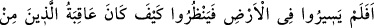

8. İnkâr edenler(e gelince): Yıkım onlara! (Allah) Onların işlerini boşa
çıkarmıştır.
Zorluk ve hakîrlik, rüsvâlık, helâk ve ümidsizlik onlaradır. Keşfü’l- esrar’da şöyle
denmiştir: “Allah onları helâk etti, onlar da tam helâk oldular.”
(it‘âs), helâk
etmek ve yüz üstü bırakmak demektir.
İrşad kitabında şöyle denilmektedir: Bu
(ta‘sen) kelimesinin mensub oluşu,
hazfedilmesi (gizlenmesi) semâan vacip olan bir fiil iledir. “Allah onlara yıkılın, yok
olun, helâk olun” buyurdu demektir.
(ta‘s) helâk, kayma, düşme, şer, uzak olma ve
düşüş gibi mânalara gelmektedir. Ayetteki anlamı, “Allah onların amellerini azaltıp, yok
saydı ve zâyi etti” demektir.
9. Böyledir, çünkü onlar, Allah’ın indirdiğinden hoşlanmamışlar, Allah da onların
amellerini heder etmiştir.
Kâfirlerin helâk edilmeleri ve amellerinin boşa çıkarılması “böyledir, çünkü onlar,
Allah’ın indirdiğinden” Kur’an’dan ve Kur’an’da beyân edilen tevhid akidesinden ve
onların nefs-i emmarelerinin arzulayıp alışageldikleri duruma muhalif olan diğer
hükümlerden “hoşlanmamışlar, Allah da” bundan dolayı “onların” Kâbe’yi tavaf
etmek, Mescid-i Haram’ı îmar etmek, misafire ikram etmek, yardım isteyenlere ve
mazlumlara yardım etmek, fakirlere ve yetimlere yardım elini uzatmak… gibi
“amellerini heder etmiştir.”
Kâfirlerin amellerinin iptal edilip boşa çıkarılmasını Allah Teâlâ tekraren
zikretmiştir. Çünkü Kur’ân’ın inkârı bunu gerekli kılmaktadır. Zira inkâr ile iptal hiçbir
surette birbirinden ayrılmaz. Evet, iptal edilen bu ameller iyilik suretinde olanlardır.
Kureyş kâfirlerine göre durum böyledir. Kıyâmete kadar diğer bütün kâfirlerin
durumunu da buna kıyas edebilirsin.
10. (Onlar) yeryüzünde gezip dolaşmadılar mı ki kendilerinden öncekilerin
sonunun nasıl olduğunu görsünler? Allah onları(n evlerini, barklarını) yıkıp
başlarına geçirmiştir. Bu kâfirlere de, onun benzeri sonuçlar vardır.
Arap kâfirler, yerlerinde oturup “yeryüzünde gezip dolaşmadılar mı ki kendilerinden